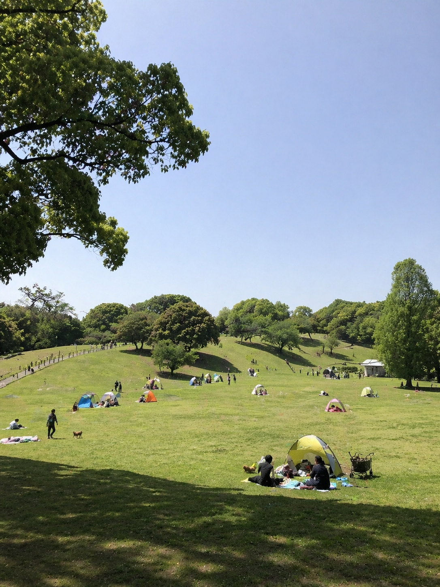

A Park in Bloom
Spring 2020 — near our home
MOON
SIDE
SIDE
Chapter 01
2020 — May
A Park in Bloom.
公園が教えてくれたこと
2020年、5月。緊急事態宣言中のできごと。
私達夫婦には『自分達のお店を持つ』という目標がありました。しかし、世界で起きている正体不明の病に、将来への大きな不安も同時に抱えていました。
そんな時に、近所の公園で見た景色。それは今でも、私たちにとって特別な景色になっています。
色とりどりのテントがぽつりぽつりと芝生の上に置かれ、大人も、子供も、犬も、それぞれがのびのびと過ごしていました。
爽やかな5月の風に木々はそよぎ、芝生は青々としていて。
太陽の光を浴びて、自然の中でくつろぐ人々の姿に、
人間の本質的な部分をみた気がしました。